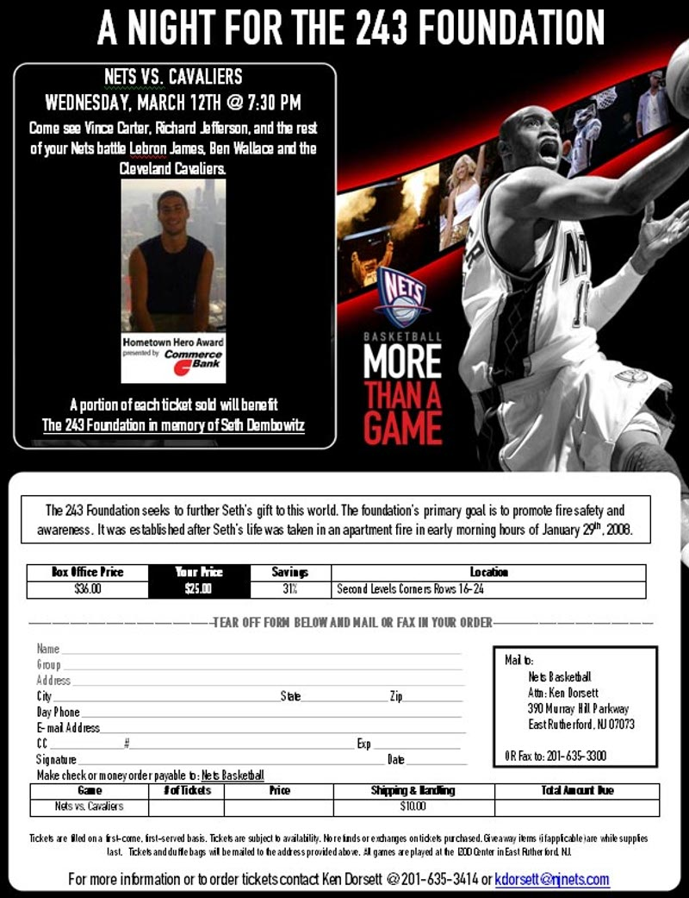

<?xml version="1.0" encoding="UTF-8"?><rss version="2.0"
	xmlns:content="http://purl.org/rss/1.0/modules/content/"
	xmlns:wfw="http://wellformedweb.org/CommentAPI/"
	xmlns:dc="http://purl.org/dc/elements/1.1/"
	xmlns:atom="http://www.w3.org/2005/Atom"
	xmlns:sy="http://purl.org/rss/1.0/modules/syndication/"
	xmlns:slash="http://purl.org/rss/1.0/modules/slash/"
	>

<channel>
	<title>The 243 Foundation</title>
	<atom:link href="http://www.the243foundation.org/feed" rel="self" type="application/rss+xml" />
	<link>http://www.the243foundation.org</link>
	<description>For the Promotion of Fire Safety and Awareness</description>
	<lastBuildDate>Thu, 15 Jan 2015 19:33:37 +0000</lastBuildDate>
	<language>en-US</language>
	<sy:updatePeriod>hourly</sy:updatePeriod>
	<sy:updateFrequency>1</sy:updateFrequency>
	<generator>http://wordpress.org/?v=4.1.10</generator>
	<item>
		<title>The 243 Foundation Fire Safety Awareness Day</title>
		<link>http://www.the243foundation.org/the-243-foundation-fire-safety-awareness-day</link>
		<comments>http://www.the243foundation.org/the-243-foundation-fire-safety-awareness-day#comments</comments>
		<pubDate>Sun, 19 Sep 2010 22:04:16 +0000</pubDate>
		<dc:creator><![CDATA[admin]]></dc:creator>
				<category><![CDATA[Events]]></category>

		<guid isPermaLink="false">http://www.the243foundation.org/?p=143</guid>
		<description><![CDATA[On May 2nd, 2010, The 243 Foundation partnered with the Back-to-Back Atlantic League Champion Somerset Patriots and local firehouses for Fire Safety Awareness Day at TD Bank Ballpark. Prior to the game, local firefighters, ladders, and engines were on hand for a fire safety demonstration, including a special educational event just for kids. In addition, [&#8230;]]]></description>
				<content:encoded><![CDATA[<p>On May 2nd, 2010, The 243 Foundation partnered with the Back-to-Back Atlantic League Champion  <a href="http://www.somersetpatriots.com/"target=blank>Somerset Patriots</a> and local firehouses for Fire Safety Awareness Day at <a href="http://www.somersetpatriots.com/ballpark/directions/"target=blank>TD Bank Ballpark</a>. Prior to the game, local firefighters, ladders, and engines were on hand for a fire safety demonstration, including a special educational event just for kids. In addition, the Patriots provided youth replica jerseys to the first 1,500 kids who come to the game. Members of The 243 Foundation gave an on-field fire safety presentation prior to the game and distributed fire safety information throughout the afternoon. </p>
<p></p>
<p><a href="http://www.the243foundation.org/wp-content/uploads/2010/04/Flyer.jpg">print</a></p>
]]></content:encoded>
			<wfw:commentRss>http://www.the243foundation.org/the-243-foundation-fire-safety-awareness-day/feed</wfw:commentRss>
		<slash:comments>0</slash:comments>
		</item>
		<item>
		<title>A Night for The 243 Foundation</title>
		<link>http://www.the243foundation.org/a-night-for-the-243-foundation</link>
		<comments>http://www.the243foundation.org/a-night-for-the-243-foundation#comments</comments>
		<pubDate>Wed, 05 Mar 2008 02:39:31 +0000</pubDate>
		<dc:creator><![CDATA[admin]]></dc:creator>
				<category><![CDATA[Hometown Hero]]></category>
		<category><![CDATA[NBA]]></category>
		<category><![CDATA[Nets]]></category>
		<category><![CDATA[Uncategorized]]></category>

		<guid isPermaLink="false">http://www.echoability.com/the243foundation/?p=7</guid>
		<description><![CDATA[Thanks to the generosity of the New Jersey Nets, we attended the Cavaliers-Nets game in East Rutherford, New Jersey on Wednesday, March 12, 2008 at 7:30 PM. About ten minutes before tip-off, the Nets honored Seth by naming him the “Hometown Hero” of the month. The Nets advertised our website at the game, and donated [&#8230;]]]></description>
				<content:encoded><![CDATA[<p>Thanks to the generosity of the New Jersey Nets, we attended the Cavaliers-Nets game in East Rutherford, New Jersey on Wednesday, March 12, 2008 at 7:30 PM. About ten minutes before tip-off, the Nets honored Seth by naming him the “Hometown Hero” of the month.</p>
<p>The Nets advertised our website at the game, and donated a portion of the night’s group ticket sales to The 243 Foundation. With LeBron James in the house, and a sold-out crowd, there were 20,000 people who were able to see what Seth means to us all.</p>
<p>A generous portion of every group ticket purchased for the night’s game was donated to The 243 Foundation.  There are no words to describe how much The New Jersey Nets have already done for Seth and for The 243 Foundation. We thank them from the deepest reaches of our hearts.</p>
<p></p>
<p><a href="../wp-content/images/243_Foundation_Night.jpg">print</a></p>
]]></content:encoded>
			<wfw:commentRss>http://www.the243foundation.org/a-night-for-the-243-foundation/feed</wfw:commentRss>
		<slash:comments>0</slash:comments>
		</item>
	</channel>
</rss>
